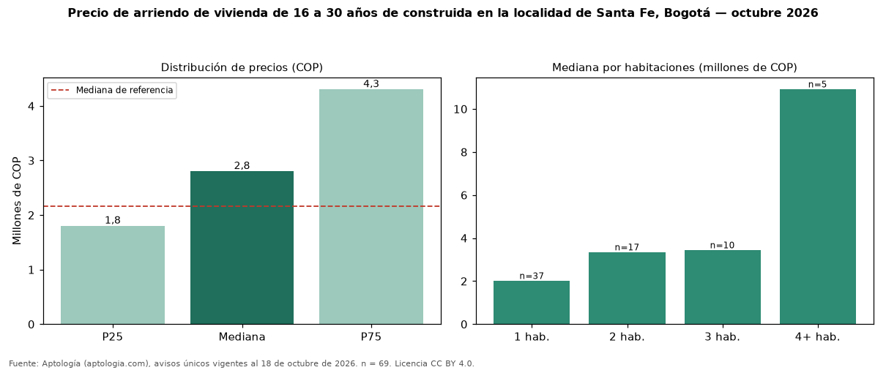

Precio de arriendo de vivienda de 16 a 30 años de construida en la localidad de Santa Fe, Bogotá — octubre 2026
Con 69 avisos únicos, el canon mediano de vivienda de 16 a 30 años de construida en arriendo en la localidad de Santa Fe, Bogotá es COP 2.800.000 al mes. Eso es 29 % más que la mediana de toda la oferta de arriendo en la localidad de Santa Fe, Bogotá (COP 2.162.225). En todo Bogotá, la misma combinación tiene mediana COP 6.000.000 (−53 %). Por metro cuadrado, la mediana es COP 42.105/m² (−28 % frente a COP 58.333/m²), puesto 3 de 9 localidades comparables. Cruzando con la oferta de venta equivalente, la rentabilidad bruta implícita es 9,9 % anual. El rango intercuartílico va de COP 1.800.000 a COP 4.300.000 (razón 2,4). Por habitaciones: 1 habitación, COP 1.999.000 (n = 37); 2 habitaciones, COP 3.330.000 (n = 17); 3 habitaciones, COP 3.425.000 (n = 10); 4 o más habitaciones, COP 10.900.000 (n = 5). Datos abiertos CC BY 4.0 de Aptología; fuente y búsqueda de inmuebles: https://www.aptologia.com/arriendo-zona/bogota/localidad-santa-fe. Archivos: PDF de 2 páginas, CSV con las cifras y gráfica PNG.

| Avisos únicos | 69 |
|---|---|
| Percentil 25 | COP 1.800.000 |
| Mediana | COP 2.800.000 |
| Percentil 75 | COP 4.300.000 |
| Mediana por m² | COP 42.105 |
Fuente: avisos vigentes de portales inmobiliarios recopilados por Aptología, deduplicados (mínimo 30 avisos únicos por celda). Precios pedidos, no cerrados. Fecha: 2026-10-18.